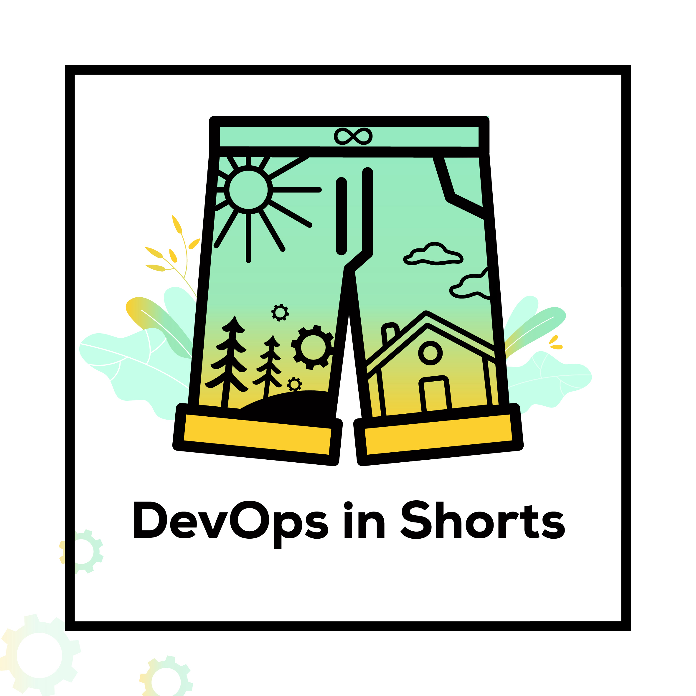

    <!--background color-->
    <script type="text/javascript">
        document.write ('<body style="background: Gainsboro; background-attachment: fixed;">')
    </script>

    <section id="conference" class="black-frame about about-container about-container-top">
      <h1>{{ page.title }}</h1>

      <div class="icon-about">
        
      </div>

      <h2 class="second">Theme</h2>

      <p>Welcome to "DevOps in Shorts" - Where Ideas Ignite in 15 Minutes!</p>

      <p>Are you ready to embark on an exhilarating journey into the world of DevOps? DevOps in Shorts is not your typical conference; it's a dynamic platform where innovation meets brevity. Our theme encapsulates the essence of modern development and operations technologies and the DevOps culture in one powerful phrase: "DevOps in Shorts." We believe that great ideas can be communicated effectively and passionately in just 15 minutes. At this conference, we challenge our speakers to distill their knowledge, experiences, and insights into short, impactful talks that leave you inspired and ready to transform your own DevOps practices.</p>

      <h2 class="third">Mission</h2>

      <p>Our mission at DevOps in Shorts is crystal clear - to empower the DevOps community with condensed knowledge that sparks change. We're on a mission to accelerate the adoption of DevOps practices by providing a platform where thought leaders, practitioners, and enthusiasts can share their wisdom, innovative approaches, and best practices. We believe in the power of concise, high-impact talks that don't just scratch the surface but dive deep into the heart of DevOps. By doing so, we aim to drive collaboration, foster innovation, and empower organizations to streamline their development and operations processes.</p>

      <h2 class="second">Vision</h2>

      <p>Our vision is bold yet achievable - to be the catalyst for a global DevOps revolution through knowledge exchange. We envision a world where DevOps principles are not just embraced but ingrained in the DNA of every organization. At DevOps in Shorts, we see a future where 15-minute talks serve as the spark that ignites conversations, transforms mindsets, and propels businesses towards agility and excellence. We strive to create an inclusive and collaborative community that thrives on shared learning, helping organizations adapt to the ever-evolving technology landscape.</p>
      
      <h2 class="first">Objectives</h2>

      <p>DevOps in Shorts is more than just a conference; it's a platform with concrete objectives:</p>
      <ol>
        <li><b>Knowledge Dissemination:</b> To provide a platform where experts can share their insights, tools, and best practices in DevOps, condensing their wisdom into impactful 15-minute presentations.</li>
        <li><b>Community Building:</b> To foster a vibrant DevOps community that encourages networking, collaboration, and the exchange of ideas among attendees, speakers, and sponsors.</li>
        <li><b>Inspiration:</b> To inspire attendees to embrace DevOps culture and principles, equipping them with the knowledge and motivation to drive change within their organizations.</li>
        <li><b>Actionable Takeaways:</b> To ensure that every attendee leaves with actionable insights and strategies they can implement immediately to improve their DevOps processes.</li>
      </ol>      
      <p>Join us at DevOps in Shorts, where 15 minutes can change the way you think about DevOps, and together, we'll revolutionize the world of development and operations.</p>
    </section>

    <section id="fourth" class="black-frame about about-container">
      <h1>DevOps in Shorts</h1>

      <p>More</p>
    </section>

    <section id="fifth" class="black-frame about about-container about-container-bottom">
      <h1>About</h1>

      <p>Info</p>
    </section>